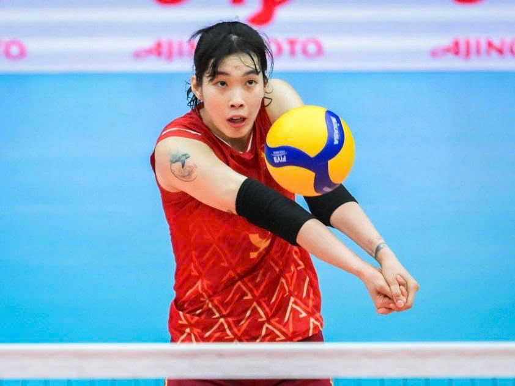

Ấn định thời điểm tuyển bóng chuyền nữ Việt Nam tập trung
Tuyển bóng chuyền nữ Việt Nam sẽ có lịch trình thi đấu dày đặc trong năm 2026. Đội tuyển dự kiến tập trung vào cuối tháng 5 sau Cúp VTV9-Bình Điền 2026 để chuẩn bị cho mùa giải quốc tế.

Thời điểm tập trung của đội tuyển bóng chuyền nữ
Sau khi hai giải đấu quan trọng là Cúp Hùng Vương 2026 và giai đoạn 1 giải VĐQG các CLB khép lại, đội tuyển bóng chuyền nữ Việt Nam đang bước vào giai đoạn chuẩn bị lực lượng cho mùa giải quốc tế bận rộn phía trước. Theo kế hoạch, thầy trò HLV Nguyễn Tuấn Kiệt sẽ chính thức tập trung sau khi Cúp VTV9-Bình Điền 2026 kết thúc, dự kiến vào cuối tháng 5.
Mốc thời gian then chốt cho rà soát lực lượng
Đây được xem là mốc thời gian then chốt để ban huấn luyện rà soát lực lượng, lựa chọn những gương mặt phù hợp nhất. Trước đó, hai giải đấu trong nước vừa qua đã đóng vai trò như bài kiểm tra chuyên môn quan trọng, giúp ban huấn luyện đánh giá phong độ và sự ổn định của các tuyển thủ.
Xây dựng đội tuyển từ các CLB hàng đầu V-League
Theo SGGP, HLV Nguyễn Tuấn Kiệt cho biết đội tuyển sẽ được xây dựng dựa trên những nhân tố nổi bật từ các đội bóng hàng đầu như Hà Nội Tasco Auto - nơi ông Kiệt cũng làm HLV trưởng, HCĐG Lào Cai, VTV Bình Điền Long An, Thông tin-Đông Bắc và LPB Ninh Bình. Đây là những đội trong top 5 vòng 1 giải VĐQG và hầu hết góp mặt tại Cúp Hùng Vương - trừ LPB Ninh Bình, nơi trình độ cầu thủ được thể hiện rõ nét.
Tình hình lực lượng sau SEA Games 33
Ở lần tập trung gần nhất tại SEA Games 33 cuối năm 2025, đội tuyển duy trì bộ khung gồm 14 VĐV. Nhiều cái tên trong số này vẫn giữ được phong độ ổn định, song cũng có không ít trường hợp chưa đạt trạng thái tốt nhất, buộc ban huấn luyện phải tính toán điều chỉnh.
Lịch tham dự giải đấu quốc tế 2026
Ngay sau khi hội quân, đội tuyển sẽ bước vào giải đấu quốc tế đầu tiên trong năm là AVC Cup 2026, diễn ra từ ngày 6/6 đến 13/6 tại Philippines. Trần Thị Thanh Thúy và đồng đội sẽ tham dự 2 chặng SEA V.League, VTV Cup, giải vô địch châu Á và ASIAD 20 sau đó.
Kỳ vọng vào đội tuyển bóng chuyền nữ Việt Nam 2026
Với những bước chuẩn bị kỹ lưỡng và việc lựa chọn những cầu thủ trong trạng thái tốt nhất từ V-League, đội tuyển bóng chuyền nữ Việt Nam kỳ vọng sẽ tạo nên những kết quả ấn tượng ở các giải đấu quốc tế trong năm 2026.